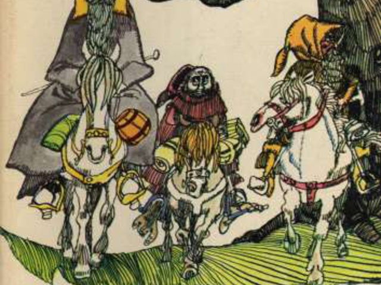

|  | Volt egyszer egy földbe vájt lyuk és abban élt egy babó. Nem volt ez a lyuk rút, mocskos, nedves, teli féregmaradékkal, dohszaggal, sem száraz, csupasz, homokos lyuk, ahol se leülni, sem enni nemigen lehet: ez babólyuk volt, ami egyértelmű a kényelemmel. |